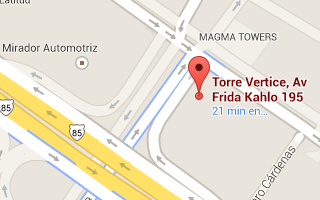

Hacking Monterrey
Un sitio en Monterrey para construir, compartir y aprender sobre tecnologías que buscan brindar soluciones cívicas.
¡Ven y comparte con nosotros!Ven y únete a un grupo de entusiastas con profundos intereses cívicos que buscan brindar soluciones tecnológicas a la comunidad en nuestro afán por lograr de manera directa o indirecta impactar positivamente en la calidad de vida de los ciudadanos.
Buscamos intersectar al gobierno abierto con las ciudades y la tecnología. En nuestras reuniones esperamos crear hacking cívico, aprender y compartir el conocimiento.
Las Civic Hack Night, son organizadas por el colectivo tecnológico/cívico de Codeando México, estas noches están orientadas para aquellas personas que deseen:
- Trabajar en proyectos de carácter cívico
- Iniciar nuevos proyectos o unirse a proyectos existentes (aquellos que no sean programadores igualmente son más que bienvenidos)
- Aportar ideas y obtener ayuda de otras personas con experiencia en el ámbito técnico y de gobierno abierto
- Aprender acerca de Open Data, ciudades inteligentes y gobierno abierto
Si nuestros patrocinantes así nos lo permiten, siempre tendremos comida y algunos snacks.
Agenda
- 7:00 p. m.
- Abrebocas y socializar
- 7:15 p. m.
- Bienvenida, presentación del equipo
- 7:30 p. m.
- Anuncios
- 7:40 p. m.
- Presentación quincenal
- 8:15 p. m.
- Promoción de proyectos de hacking cívico actuales
- 8:30 p. m.
- Organización en equipos y dar espacio para la creación de cívica o hacks
Pero… No soy programador!
No hay ningún problema! En las Civic Hack Night promovemos a las personas sin conocimientos técnicos a hacer equipo y aprender de los desarrolladores y diseñadores de nuestra comunidad. Muchas veces, los mejores proyectos cívicos provienen de un equipo de personas con perfiles diversos.
Recuerde, para crear una gran aplicación, se necesita mucho más que código.
Hacking Monterrey

7 p. m. cada miércoles (quincenal)
El Cowork
Av. Frida Kahlo 195 Suite 1205, San Pedro Garza García
Únete a la discusión
Únete a nuestra comunidad en Google+ para discutir nuevos proyectos y enterarte nuestros avances
Mantente informado de las hack night así como de los proyectos vía Twitter a través del hashtag #HackingMTY
Para aquellos fanáticos del IRC, ven y chatea con nosotros cuando quieras al canal #HackingMTY en el servidor irc.freenode.net
Entérate como nos estamos organizando, no te preocupes, puedes participar.
Notificaciones vía correo
El lunes antes de celebrarse nuestras reuniones, te enviaremos un correo electrónico con la antesala al Civic Hack Night.
Suscríbete »